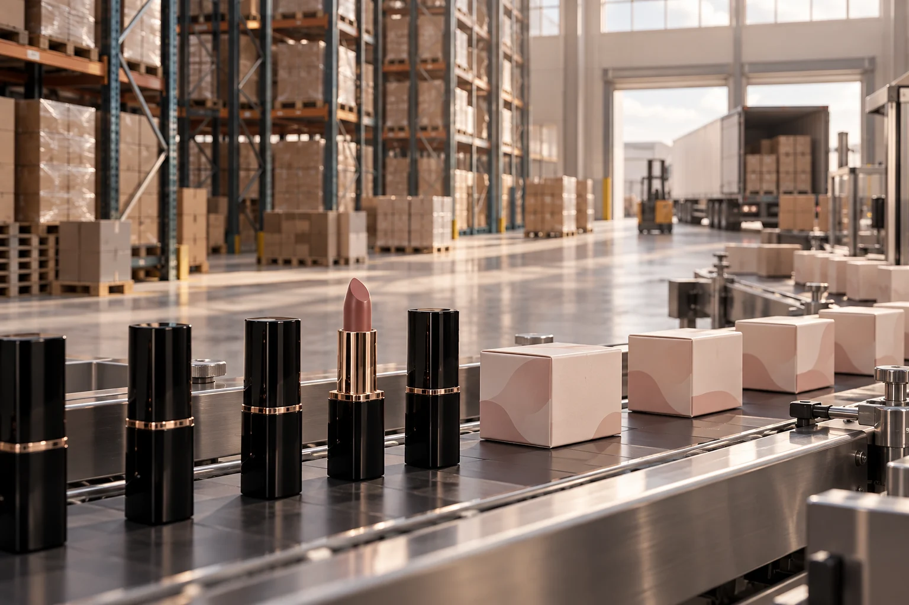

Mutualiser et mieux informer
La piste étudiée consiste à utiliser des entrepôts relais et à faire remonter les besoins pour déclencher le réapprovisionnement. Le but est de limiter l’accumulation dans chaque boutique.
02 / SUPPLY CHAIN
Étudier l’organisation des stocks et les tailles de lots de produits de maquillage Chanel, de la production aux boutiques.

01 / LE PROBLÈME
Réduire les surstocks tout en gardant les produits disponibles : la question engage toute la chaîne de distribution.
Le projet étudie ensemble les tailles de lots, les stocks en boutique et la remontée d’information vers la production. La segmentation des produits conduit à proposer des réponses différentes selon leur profil.
DE LA PRÉSENTATION AU RÉSEAU
Explorez les deux pistes de notre présentation : rapprocher le stock des marchés, puis découpler les flux vers les Amériques.
Le diagnostic présenté pour les produits C décrit une usine et un entrepôt en France, une distribution mondiale et des stocks importants en magasins.
Source : présentation Chanel, diapositives 4–7 et 12–13. Fond de carte repris du livrable. Les positions des warehouses C sont schématiques ; seuls les hubs B sont nommés dans le texte. Animation explicative, sans débit ni délai simulé. Les pourcentages B représentent la répartition proposée du volume de la zone Amériques.
02 / LES PISTES
La piste étudiée consiste à utiliser des entrepôts relais et à faire remonter les besoins pour déclencher le réapprovisionnement. Le but est de limiter l’accumulation dans chaque boutique.
Pour un autre segment, l’équipe explore une organisation par hubs régionaux et compare ses implications logistiques et économiques.
Le travail inclut des pistes sur l’organisation des lignes et les tailles de lots. La distribution ne peut être optimisée indépendamment de l’atelier.
03 / LE LIVRABLE
Une présentation structurée rassemble le diagnostic, les schémas de flux avant/après et les recommandations. Elle inclut également une démonstration numérique pour rendre la proposition plus lisible.
Les solutions sont des propositions issues du projet académique. Elles ne sont pas présentées comme un déploiement réalisé chez Chanel, ni comme des gains effectivement mesurés.
04 / CE QUE J’EN RETIENS
Une décision sur la taille d’un lot déplace aussi des stocks, des délais et des besoins d’information.
Ce travail m’a amené à relier plusieurs niveaux de décision et à expliciter les hypothèses d’un scénario. L’enjeu est de proposer une organisation compréhensible, dont les effets peuvent ensuite être évalués.
Participation à un travail collectif aux Arts et Métiers. Synthèse fondée sur la présentation du projet.
Analyser les capacités et les flux à l’échelle de l’atelier.